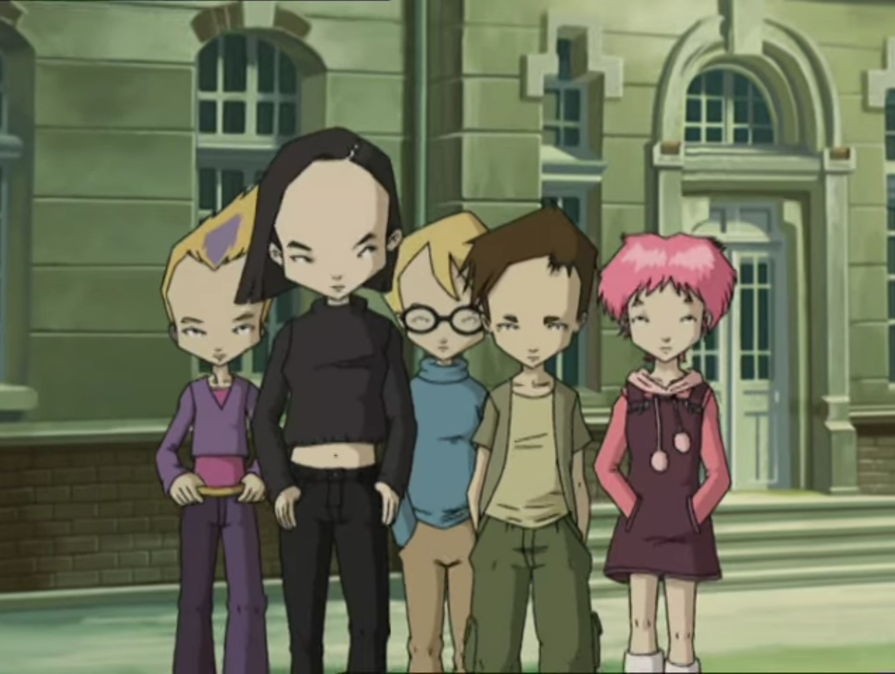
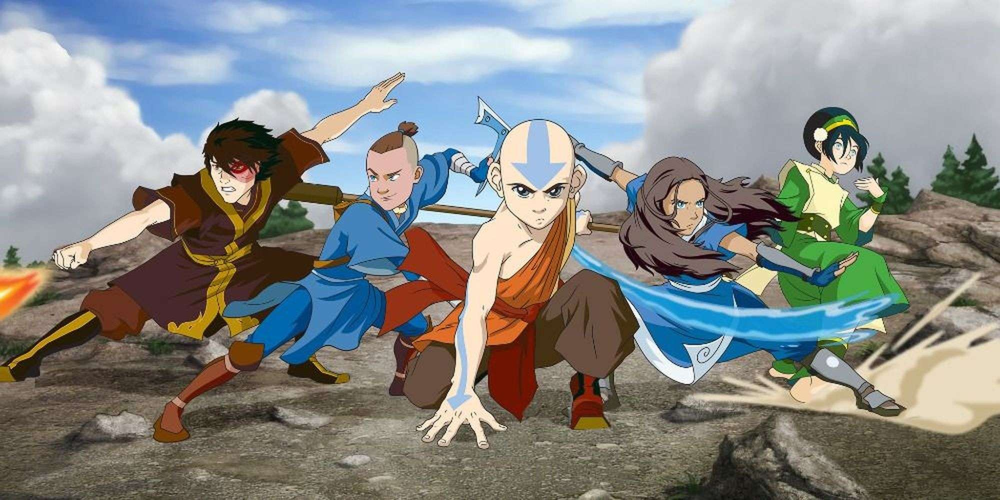
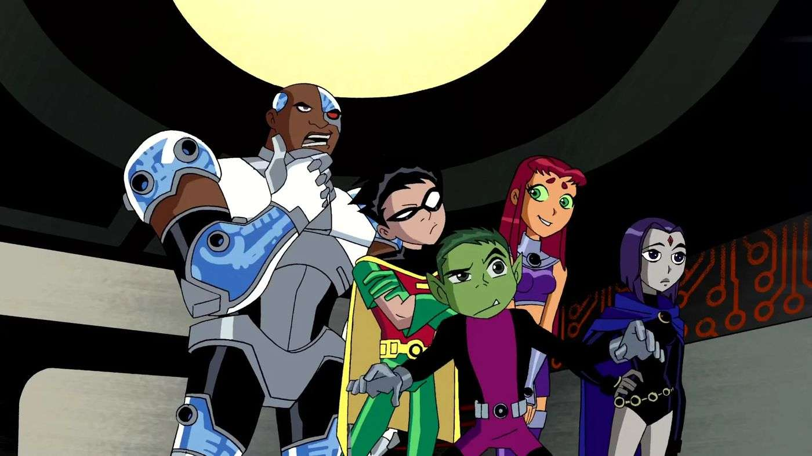

Nowdays, people that still like to watch cartoons are rare, because the graphic is 2D and the plot is simple. Most people like to watch movie and drama. The most famous examples are American movies and South Korean dramas.
Most cartoons have a simple plot, need one episode to defeat the antagonist, usually in the climax part of a cartoon. But there are also cartoons that have a complex plot like in drama or anime. That kind of cartoon needs at least several episodes until one or several seasons, whether in the beginning, middle, or end of an episode.
Even though, there are some cartoons that are good and fun to watch. What are those? Let's see together!
1. Code Lyoko

Who were born in 2004 but doesn't know this cartoon? This cartoon is certainly familiar for those who were born in 2004. From kindergarten until third grade, everytime after school would watch this cartoon in Spacetoon until the channel is deleted, precisely 18 May 2013. How nostalgic to remembering the past while could watch Spacetoon before it is finally deleted and switch to watching Naruto in Global TV and Western movies. This cartoon is also famous because of its wide forehead, leading Indonesians to call it 'jenong'.
Code Lyoko is a French cartoon that was released on 3 September 2003 and ended on 10 November 2007. Consists total of 97 episodes (95 episodes and 2 specials) with 4 seasons, this cartoon is produced by Antefilms Productions in season 1 and MoonScoop Group from season 2 until season 4. The genres are action, adventure, and science fiction. Despite its special episode (XANA Awakens) was released after season 2 ended (episode 52), it's recommended to watch the special episode first, and then episode 1 until finish (episode 95), because it is based on chronological order.
This cartoon is about a group of teenagers named Ulrich, Yumi, Odd, and Jeremy that found an AI unit in an abandoned factory. In the special episode XANA Awakens, all members are seventh graders (first year of junior high school), except Yumi is an eighth grader (second year of junior high school). In season 1 and season 2, they got promoted to next grade, so the same in season 3 and season 4. They live in dormitory in Kadic Academy, except Yumi that lives with her family in home. They also have free breakfast, lunch, and dinner, like most schools in United States. Ulrich and Odd are roomates with Odd's dog named Kiwi.
They participate in learning activities at school as usual, until a creature named XANA causes chaos in real world. When that happens, they would ask a permission to teacher to go to toilet or infirmary, but the truth is they want to go to virtual world to stop XANA. From the school to the factory, they go to the forest through the school entrance, walk deeper until found a manhole to enter the sewer, and using the skateboard to the stairs to access the bridge to the factory. After arrived, they entered the elevator heading downstairs. The other members enter to an unit to access the virtual world, wheras Jeremy would use the computer that can see each member's HP (health point), types of monster that will be faced, and tower location. In the virtual world, there are four different places (we would call biome in the game Minecraft), that are desert, forest, arctic, and mountains. Different place, the monsters are also different, but there are some that are same. There, they meet Aelita, a girl that was trapped in the virtual world, and only she can enter the tower to deactivate it, and return to the past, automatically chaos disappeared, and so on. In one episode, Aelita succeed to go back to real world and go to school with other students.
Did you know? In Spotify application, the cover picture of this opening song 'A World Without Danger' by Franck Keller, Ygal Amar, and Justine Sainte, is a picture of Ulrich and Yumi in a garden chair. From the beginning to the end of the series, the opening theme of Code lYoko never changes.
Warning spoilers below!
Ulrich has loved Yumi from the beginning, but it is unknown whether Yumi likes Ulrich or not, their relationship is complex. Even though, many fans ship Ulrich and Yumi. Aelita went back to real world in the end of episode 25. She was trapped in virtual world because her father wanted her in a safe place. In the last episode, they succeed to turn off the machine to virtual world. Starting from season 4 (episode 66), their outfits in real world have changed, so are the outfits in virtual world.
2. Avatar

Avatar is an American cartoon taht is produced by Nickelodeon Animation Studio. This cartoon has two series, that are Avatar: The Last Airbender and Avatar: The Legend of Korra. The first series (The Last Airbender) was released on 21 February 2005 and ended on 19 July 2008. The second series (The Legend of Korra) was released on 14 April 2012 and ended on 19 December 2014. "The Last Airbender" have a total 61 episodes. Each season 1 (Book One: Water) and season 2 (Book Two: Earth) have 20 episodes, and season 3 (Book Three: Fire) has 21 episodes. "The Legend of Korra" have a total of 52 episodes. Season 1 (Book One: Air) has 12 episodes, season 2 (Book Two: Spirit) has 14 episodes, and each season 3 (Book Three: Change) and season 4 (Book Four: Balance) have 13 episodes. Both series have action and adventure genre, but there are some things that differ. "The Last Airbender" have drama comedy and fantasy genre, while "The Legend of Korra" have drama and steampunk genre.
The series "The Last Airbender" is about an adventure of a protagonist named Aang. There are four kinds of benders, that are water, earth, fire, and air. The mission of the first series is to bring peace to the world by defeating a king from the Fire Nation named Ozai and stop the one hundred year war afterwards, and of course, controll all four elements. He met Toph, Katara, Sokka, and Suki. Nantinya, and he also met Zuko. Initially, Zuko is one of the main antagonists because he is a member of the Fire Nation, and then he left because of certain problems. Two of Azula's best friends, Mai and Ty Lee, also betrays Azula because of certain problems.
The series "The Legend of Korra" is about events after one hundred year war. Aang and Ozai brought people from the four nations (water, earth, fire, and air) and founded the Republic of United Nations, the capital is Republic Town. In one episode, Aang died and reincarnated become Korra. Of course the mission is to bring peace to the world and control all four elements.
Did you know? Only Azula that is a blue flame user. Blue flame has a far hotter temperature than normal flame that are red in color. Many Avatar fans say that Korra is a tomboy because of her tough and stubborn personality.
Warning spoilers below!
The Last Airbender
Aang was born im 12 AG died in 153 AG, in season 1 episode 1 of the next season (The Legend of Korra). He is actually 112 years old, only because when he was 12 years old, he was frozen in an iceberg for 100 years, but after get out, he still looks young. Zuko started joining Aang's team in season 3. The reason Zuko left the Fire Nation because his father, Ozai, the king of Fire Nation, spoiled Azula rotten and neglected Zuko beacuse his mother, Ursa love him more than Azula. His father deemed him as a failure. In the end of the series, after Ozai was defeated, Zuko become the new king of the Fire Nation. Aang ends with Katara as a couple and have three children, one of them is a bender. In the past, Azula, Mai, and Ty Lee were the trio that always together. Azula knows Mai likes Zuko and she, with Ty Lee, teased them. But that, their relationship often went on and off. Mai and Ty Lee betray Azula because they know they were manipulated by her. Zuko has a child named Izumi, but it is unknown who is Izumi's mother. Many fans say that Mai may be the most possible. Coincidentally, Izumi means "fountain" in Japanese, the child is named beacuse of a childhood incident Mai and Zuko fell into a fountain.
The Legend of Korra
Initially, Korra liked Mako, but then changes into Asami. Mako ever loved Asami and Korra , of course in a different time, not both immediately, and their relationship ends. The ship between Korra and Asami is a popular girl's love until it is shortened become Korrasami.
3. Teen Titans

Teen Titans is an American cartoon that is produced by Warner Bros Animation and DC Comics. Consists of 65 episodes with 5 seasons, 1 special, and 1 movie. Released on 19 July 2003 and ended on 15 September 2006. The special episode (The Lost Episode) was released on the middle of season 3 and the movie (Teen Titans: Trouble in Tokyo) was released eight years after season 5 ended. Based on the production studio, DC Comics, this cartoon genre is superhero.
This cartoon is about a team consists of five members. This team is led by Robin, other members including Beast Boy, Cyborg, Starfire, and Raven. They live in a large T-shaped tower in a town named Jump City. Each of them have their own rooms, the contents of the rooms are also different. The tower also has a garage filled with a car that is owned by Cyborg. As the series progresses, they have faced various villains like Brotherhood of Evil, Trigon, Blackfire, HIVE Five, Red X, and Slade. Particularly Red X, he is not always an antagonist. Furthermore, Teen Titans also met with other teams, like Titans East and other superheroes.
Did you know? Robin is actually an adopted child of Batman, for those who haven't see Batman series/comic. There are four generations of Robin, those are Dick Grayson (in this series), Jason Todd, Tim Drake, and Damian Wayne, respectively.
Warning spoilers below!
There are two famous ships, that are Robstar or commonly known as DickKory, and BBRae. DickKory is a ship between Robin and Starfire, while BBRae is a ship between Beast Boy and Raven. The ship name DickKory is more commomly used than Robstar beacuse Starfire's real name is Koriand'r, wheras Robin's real name is Richard "Dick" Grayson, later in the age of 17/18, he changed his identity become Nightwing, can be seen in episode 14. Starfire's real name is like that because she was not from Earth, but from Tamaran world, can be seen in episode 29. Raven also wan't from Earth, but from Azarath world, can be seen in episode 46. In episode 28 and episode 61, Red X helps Robin, but the reason in unknown. In the end of the movie, Robin and Starfire kiss in the middle of rain while being looked by other three members.
4. RWBY
RWBY is actually an American web series, can be classified as a cartoon, that is produced by Rooster Teeth Animation. If other cartoons have episode and season, then RWBY refers as volume and chapter, respectively. This series consists of 116 episodes with 9 seasons. Released on 18 July 2013 and still haven't finished, at least not as long as One Piece anime. Each season 1 and 5 have 16 episodes, each season 2, 3, and 4 have 12 episodes, each season 6 and 7 have 13 episodes, season 8 has 14 episode, and season 9 has 10 episode. This cartoon genres are adventure, action, and science fiction.
This cartoon is about a group of girls named Ruby, Weiss, Blake, and Yang, which is led by Ruby. It takes place in a fictional world named Remnant that consists of four kingdoms, that are Vale, Mistral, Atlas and Vacuo, that are surrounded by Grimm monsters. Four of them and other students studied in Beacon Academy to train themselves become a great hunter/huntress and fighter. While at academy, they met few other students and friends with them. As the series progresses, they also have fought with anagonists and have met other characters.
Did you know? Team RWBY is named based on each of their initial names, those are Ruby, Weiss, Blake, and Yang. Coincidentally, those initial also refer to their dominant color, those are red, white, black , and yellow.
Warning spoilers below!
Ruby has a stepsister from her father named Yang. There are two famous ships, both couples involve two girls, that are Bumbleby and White Rose. Bumbleby is a ship between Yang and Blake, while White Rose is a ship between Weiss and Ruby. In season 9 episode 6 (episode 112), Yang and Blake kiss. In each season 4 and season 7, most of the characters changed their outfits.
Those are some cartoons that are good and fun to watch, despite there is still one other cartoon that can fit in the list, for example Generator Rex. But this cartoon isn't as fun as those cartoons that are mentioned above.